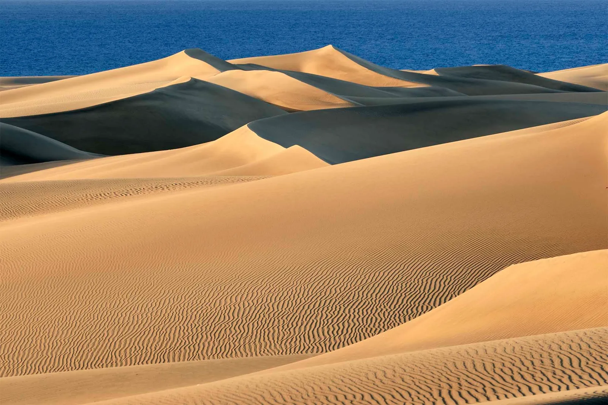
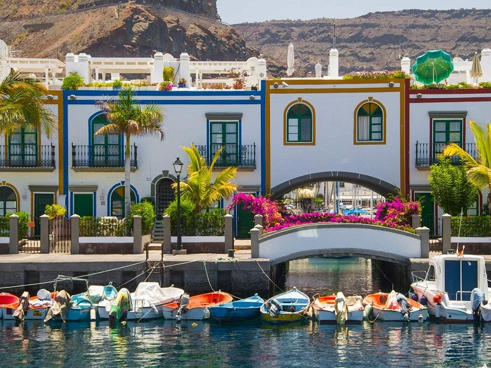
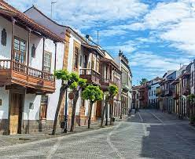

Lugares destacados
|
En el sur de Gran Canaria encontrarás un desierto de arena dorada que nació donde nadie lo esperaba. Las dunas de Maspalomas reciben al viajero con sus cuatrocientas hectáreas de extensión a los pies del océano Atlántico y su antiguo faro, que guía sus pasos desde 1890, hoy convertido en el inicio de un moderno boulevard. |

Las Dunas de Maspalomas |
|
En el sur de Gran Canaria encontrarás un desierto de arena dorada que nació donde nadie lo esperaba. Las dunas de Maspalomas reciben al viajero con sus cuatrocientas hectáreas de extensión a los pies del océano Atlántico y su antiguo faro, que guía sus pasos desde 1890, hoy convertido en el inicio de un moderno boulevard. |

Puerto de Mogán |
|
En el casco de Teror se encuentra escondido el mayor de nuestros tesoros. Ubicado en pleno corazón de la isla, en este pueblo encontrarás calles adoquinadas, balcones colgantes y si continúas caminando, una basílica que data del S.XVIII, declarada Bien de Interés Cultural. Un lugar de gran valor simbólico para todos los isleños, donde reina la Virgen del Pino, patrona de la isla. |

Casco de Teror |
|
En plena capital de Gran Canaria existe una pecera gigante y sin cristales, Las Canteras. Una kilométrica playa con un fondo marino sorprendente, protegida por una barrera natural de piedra y coral. Una playa urbana vibrante, como la propia ciudad, que no debes perderte si visitas la capital. |

Playa de las canteras |